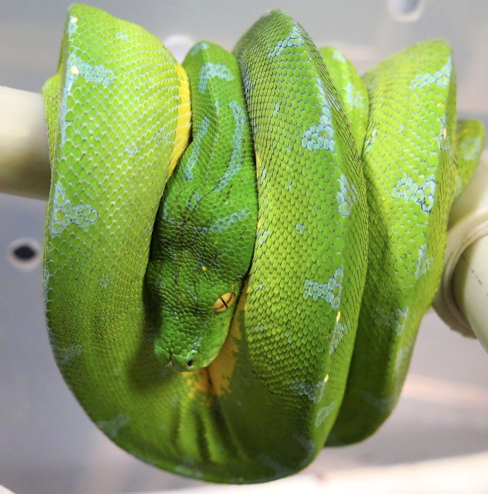
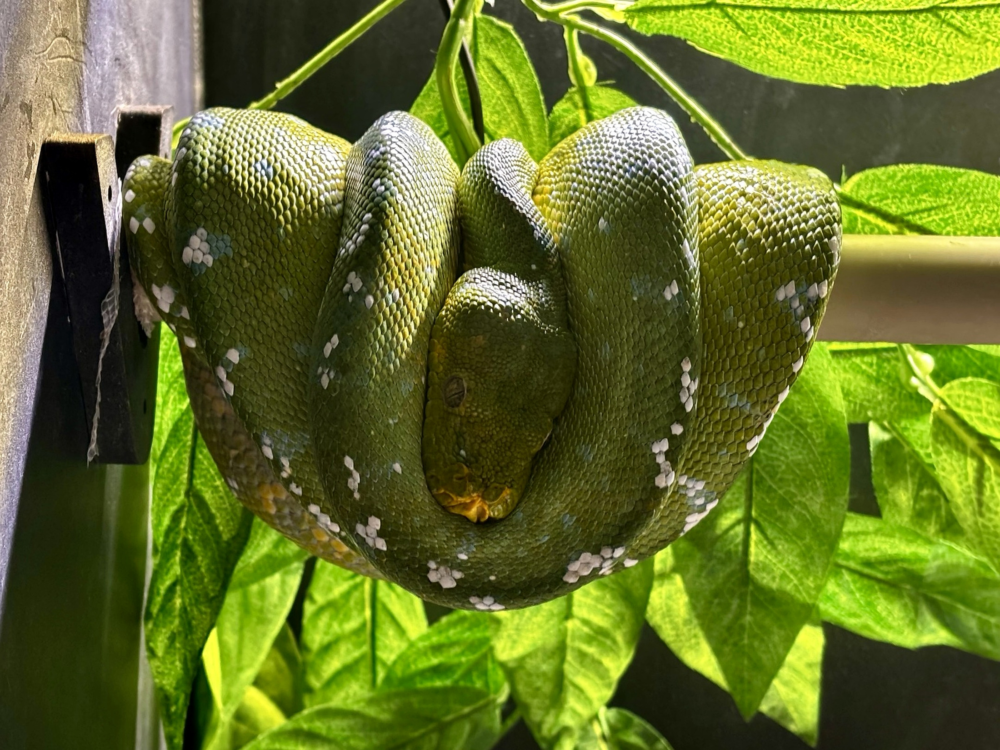

Status ochrony, CITES i legalne pochodzenie
Morelia viridis jest obecnie klasyfikowana przez IUCN jako gatunek najmniejszej troski (LC), ale pozostaje przedmiotem intensywnego handlu międzynarodowego. Gatunek jest objęty CITES Appendix II. Dla hodowcy praktycznie oznacza to, że pochodzenie osobnika nie powinno być traktowane jako formalność: dokumentacja zakupu, dane hodowcy i ciągłość pochodzenia mają znaczenie zarówno prawne, jak i hodowlane.
W przypadku osobników określanych nazwą lokalności warto oddzielać udokumentowane pochodzenie od podobieństwa fenotypowego. Sam wygląd nie jest wystarczającym dowodem, że zwierzę jest „czystym Biak”, „Aru”, „Sorong” itd.
Morelia viridis — opis gatunku, budowa i niezwykłe przystosowania
Morelia viridis to jeden z najbardziej wyspecjalizowanych pytonów nadrzewnych. Smukłe, ale silnie umięśnione ciało, chwytny ogon, wyraźna głowa i termoreceptory tworzą zestaw cech przystosowujących go do polowania z zasadzki ponad ziemią. Typowy dorosły osiąga około 1,2–1,8 m; w literaturze opisuje się osobniki przekraczające 2 m, jednak nie jest to standard.
Rozmiar i budowa różnią się między populacjami i płciami.
Dorosły jest przede wszystkim nocnym drapieżnikiem z zasadzki.
Największa część zasięgu leży na Nowej Gwinei; australijska populacja ma dużo mniejszy obszar.
W hodowli prawidłowo prowadzone osobniki mogą żyć około dwóch dekad.
Budowa nadrzewnego specjalisty
Ciało nie jest przypadkowo „zwinięte na gałęzi”. Symetryczne pętle rozkładają masę na żerdzi, a ogon pozostaje skutecznym punktem kotwiczenia. Podczas polowania przednia część ciała wysuwa się w charakterystyczną pozycję w kształcie litery S, umożliwiając bardzo szybki wyrzut głowy.
Ontogenetyczna zmiana barwy
W całym kompleksie neonaty mogą być intensywnie żółte, a w północnym Morelia azurea także czerwono‑ceglaste. Czerwonych młodych nie potwierdzono u południowego M. viridis. Wraz z rozwojem następuje zmiana do barwy zielonej. Badania Wilsona, Heinsohna i Endlera wspierają jej znaczenie adaptacyjne: młode i dorosłe wykorzystują inne mikrosiedliska, a odpowiadające im barwy poprawiają kamuflaż. Zmiana koloru nie jest równoznaczna z osiągnięciem dojrzałości płciowej.
Temperament
Określenie „agresywny” jest zbyt proste. To reaktywny drapieżnik z zasadzki. W dzień wiele osobników jest spokojnych, natomiast nocą wejście w pozycję łowiecką radykalnie zwiększa prawdopodobieństwo błyskawicznego ataku na ciepły, poruszający się obiekt. Różnice osobnicze są duże. Nie należy próbować „oswajać” węża częstą manipulacją — lepsza jest przewidywalna obsługa przy minimalnym stresie.
Ciekawostki
- dawna nazwa Chondropython viridis pozostawiła popularne hodowlane określenie „chondro”;
- termoreceptory pomagają wykrywać stałocieplną zdobycz po zmroku;
- młode i dorosłe różnią się nie tylko barwą, ale również ekologią żerowania;
- Morelia viridis i Corallus caninus są klasycznym przykładem konwergencji ewolucyjnej — podobne środowisko doprowadziło u odległych linii do bardzo podobnej sylwetki i zachowania.

Występowanie i życie Morelia viridis w naturze
Zasięg obejmuje Nową Gwineę, część pobliskich wysp oraz północno‑wschodni skraj Australii. Modelowanie Wilsona i Heinsohna wskazało co najmniej 200 000 km² klimatycznie odpowiedniego środowiska w Papui‑Nowej Gwinei, podczas gdy odpowiedni obszar australijski jest wielokrotnie mniejszy. Gatunek występuje w tropikalnych lasach nizinnych i podgórskich, wtórnych oraz regenerujących się; notowano go od poziomu morza do około 2000 m.
Mikrosiedlisko zmienia się wraz z wiekiem
Młode częściej wykorzystują luki i obrzeża lasu, gdzie ich żółta lub czerwonawa barwa odpowiada innemu tłu i innej bazie pokarmowej. Dorosłe zielone osobniki są silniej kojarzone z zamkniętym lasem. Oznacza to, że „tropikalny las” nie jest jednym zestawem temperatury, wilgotności i światła — w naturze wąż wybiera mikroklimat.
Ruch — mit nieruchomego chondro
Telemetria 27 osobników w Iron Range wykazała złożone różnice płciowe i wiekowe. Dorosłe samice utrzymywały stabilne areały średnio około 6,21 ha, podczas gdy samce i młode nie miały analogicznie stabilnych areałów. Samce przemieszczają się m.in. w poszukiwaniu samic. Wielogodzinny spoczynek na żerdzi jest normalny, ale nie oznacza braku potrzeby przestrzeni.
Polowanie
To drapieżnik typu sit‑and‑wait. Może używać tego samego stanowiska zasadzki przez wiele dni, oszczędzając energię. Dorosłe polują przede wszystkim nocą; w badanej populacji australijskiej ważną zdobyczą były gryzonie Rattus leucopus i Melomys capensis. Młode wykorzystują mniejszą zdobycz, w tym jaszczurki i bezkręgowce.
Lokalności i pochodzenie
Nazwy Biak, Aru, Sorong, Jayapura itd. są niezwykle użyteczne hodowlano, ale fenotyp nie jest dowodem czystości lokalności. Współczesne badania genetyczne wykazały głęboką strukturę populacyjną kompleksu zielonych pytonów. Dlatego rodowód jest ważniejszy niż „wygląda jak Aru”.

Terrarium dla Morelia viridis — projekt od podstaw
Dobre terrarium dla pytona zielonego nie jest po prostu wysoką skrzynią z jedną żerdzią. Powinno działać jak trójwymiarowy system mikroklimatyczny: wąż ma mieć kilka stabilnych stanowisk o różnej temperaturze, wilgotności, ekspozycji na światło i stopniu osłonięcia. ReptiFiles podaje dla dorosłego Morelia viridis punkt wyjścia 90 × 60 × 60 cm (dł. × gł. × wys.), a jako lepsze rozwiązania wskazuje m.in. 120 × 60 × 60 cm oraz 90 × 60 × 90 cm. Dla dobrze rozrośniętych samic i zwierząt aktywnych warto iść w większy wymiar, o ile całe wnętrze jest funkcjonalnie urządzone.
1. Z jakiego materiału najlepiej zbudować terrarium?
PVC / spienione PVC / HDPE
Dla Morelia viridis jest to jeden z najbardziej praktycznych materiałów: nie chłonie wilgoci, łatwo się dezynfekuje, dobrze trzyma temperaturę i wilgotność oraz pozwala łatwo montować uchwyty żerdzi, sondy, zraszanie i ogrzewanie. ReptiFiles wprost wskazuje kilka terrariów PVC jako rozwiązania długoterminowe.
Najlepsze zastosowanie: hodowla, ekspozycja, pomieszczenia z umiarkowaną lub niską temperaturą otoczenia.
Sklejka / drewno dokładnie zabezpieczone
Dobrze izoluje i pozwala wykonać dowolny wymiar. Wszystkie powierzchnie, krawędzie, otwory i łączenia muszą być całkowicie zabezpieczone nietoksyczną powłoką odporną na wodę; narożniki warto uszczelnić silikonem akwarystycznym po pełnym utwardzeniu materiałów.
Ryzyko: źle zabezpieczone drewno puchnie, pleśnieje i staje się trudne do skutecznej dezynfekcji.
Szkło
Może działać, ale słabiej izoluje termicznie i szybciej oddaje wilgoć przez rozbudowane siatki. Transparentne boki zwiększają ekspozycję wizualną zwierzęcia, dlatego zwykle warto osłonić tył i boki. W chłodnym pomieszczeniu trudniej utrzymać stabilne parametry niż w PVC.
Zaleta: bardzo dobra widoczność i prosta dezynfekcja.
2. Jak rozmieścić żerdzie względem gradientu?
ReptiFiles podkreśla potrzebę kilku stabilnych gałęzi, a doświadczony hodowca Branden Darlison‑Hoskin opisuje żerdzie o średnicy mniej więcej od połowy do pełnej szerokości ciała węża. W praktyce najlepiej zaoferować 2–3 średnice i pozwolić zwierzęciu wybrać. Żerdzie muszą być sztywne, bez obrotu i ugięcia pod ciężarem węża.
Umieszczona tak, aby grzbiet zwiniętego węża znajdował się w bezpiecznym zasięgu źródła ciepła i ewentualnego UVB. Nie należy ustalać wysokości „na oko” — mierzymy temperaturę na samej żerdzi i na grzbiecie zwierzęcia.
Strefa komfortowa i droga pomiędzy ciepłem a chłodem. Powinna umożliwiać zmianę miejsca bez konieczności schodzenia na dno.
ReptiFiles zaleca, by co najmniej jedna żerdź znajdowała się do około 30 cm nad podłożem jako niższe stanowisko łowieckie. Tu zwykle jest chłodniej i bardziej wilgotno.
Praktyczny układ w terrarium 120 × 60 × 60 cm: jedna długa żerdź w górnej połowie po stronie cieplejszej, druga na podobnej lub nieco niższej wysokości po stronie chłodniejszej, dodatkowa żerdź na poziomie pośrednim oraz niska żerdź łowiecka. Powinny istnieć połączenia ukośne lub grube pnącza umożliwiające nocne przemieszczanie się.
3. Jakie żerdzie wybrać?
Naturalne gałęzie
Dają najlepszą zmienność faktury i średnicy. Muszą pochodzić z pewnego, nieskażonego chemicznie miejsca, być zdrowe mechanicznie, dokładnie oczyszczone i całkowicie wysuszone przed montażem.
Żerdzie syntetyczne
Karbowane paliki ogrodowe pokryte tworzywem, teksturowane tworzywa lub odpowiednio przygotowane rury są bardzo łatwe do mycia i dezynfekcji. Gładka powierzchnia nie jest idealna — wąż powinien mieć pewny chwyt.
Montaż
Najlepsze są uchwyty przykręcane do ścian lub demontowalne systemy, które nie pozwalają żerdzi obracać się pod ciężarem zwierzęcia. Demontaż bez siłowania się z wężem ogromnie ułatwia higienę.
4. Kryjówki i osłona wizualna
U gatunku nadrzewnego „kryjówka” nie musi oznaczać jaskini na dnie. ReptiFiles wymienia kryjówki mocowane wysoko, a gęsta roślinność może tworzyć bezpieczne strefy bez odbierania zwierzęciu możliwości obserwacji otoczenia. Warto stworzyć osłonę zarówno po stronie cieplejszej, jak i chłodniejszej, żeby wąż nie musiał wybierać pomiędzy bezpieczeństwem a właściwą temperaturą.
5. Roślinność — żywa czy sztuczna?
Rośliny żywe
ReptiFiles wymienia m.in. pothos, fikusy, draceny i schefflery. Żywe rośliny zwiększają złożoność środowiska, tworzą strefy cienia i pomagają stabilizować wilgotność. Muszą być jednak na tyle mocne, aby nie łamały się przy nocnej aktywności węża.
Rośliny sztuczne
W systemach nastawionych na bardzo łatwe czyszczenie sprawdzają się wysokiej jakości sztuczne pnącza i liście. Należy unikać ostrych drutów, luźnych włókien, odsłoniętych końcówek i elementów łatwych do połknięcia.
6. Dno i podłoże
Istnieją dwie poprawne filozofie. Naturalistyczna wykorzystuje warstwę podłoża tropikalnego, które pomaga amortyzować upadek i stabilizować wilgotność. ReptiFiles proponuje m.in. mieszankę ziemi bez dodatków, włókna kokosowego i piasku oraz warstwę 5–10 cm. Druga metoda — szczególnie praktyczna w kwarantannie, przy młodych i w hodowli nastawionej na kontrolę — to podkłady higieniczne lub papier, które natychmiast pokazują mocz i kał. W obu przypadkach dno musi przesychać pomiędzy cyklami zraszania.
7. Wentylacja i technika
- Otwory wentylacyjne: najlepiej na więcej niż jednej wysokości, aby powietrze nie stało w miejscu.
- Termostat: obowiązkowy przy każdym aktywnym ogrzewaniu.
- Minimum pomiarowe: sonda temperatury na ciepłej żerdzi + druga w chłodniejszej strefie + higrometr w środkowej części.
- Źródła światła: montowane tak, by wąż nie mógł wejść na oprawę ani dotknąć gorącego elementu.
- UVB: odległość dobiera się do realnego UVI i rodzaju siatki, nie wyłącznie do centymetrów z pudełka lampy.
Gotowe terrarium powinno zdać ten test
Temperatura, wilgotność, zraszanie i dzienne przesuszanie
Najważniejsza korekta V8: na stronie nie zalecamy rutynowego schodzenia do 20–22°C w nocy. Część źródeł podaje taki zakres jako możliwy, jednak doświadczeni hodowcy stosują również wyraźnie cieplejsze noce. Na Gonzo Exotics przyjmujemy bardziej konserwatywny zakres roboczy dla zdrowych dorosłych osobników: 24–26°C w nocy. Jest to zakres bliższy praktyce wielu hodowców i daje większy margines bezpieczeństwa w typowym domowym terrarium.
Praktyczny cykl wilgotności w ciągu doby
Najbezpieczniejsze podejście polega na traktowaniu wilgotności jako cyklu, a nie jednej stałej liczby. Dla dorosłego Morelia viridis w dobrze wentylowanym terrarium można przyjąć następujący model roboczy:
Wieczór / po zgaszeniu światła
Krótko zraszaj wnętrze, głównie roślinność, ściany i wybrane elementy wyposażenia. RH może chwilowo wzrosnąć do około 70–85%. Wąż nie powinien pozostawać permanentnie mokry.
Noc
W pierwszych godzinach po zraszaniu wilgotność pozostaje wyższa, następnie stopniowo spada. Ważniejszy od konkretnej liczby jest stały przepływ powietrza i brak kondensacji utrzymującej się przez całą noc.
Poranek
Jeżeli terrarium i zwierzę wyraźnie przesychają zbyt szybko, można zastosować bardzo lekkie zraszanie. Jeśli nocne zraszanie utrzymuje prawidłowe nawodnienie, dodatkowe poranne zraszanie nie jest konieczne.
Dzień — faza przesuszania
Powierzchnie powinny być w większości suche. RH może zejść w okolice 45–55%, a nawet krótkotrwale w okolice 40% w silnie wentylowanym zbiorniku, jeśli zwierzę jest dobrze nawodnione i ma stały dostęp do świeżej wody.
ReptiFiles podaje dla tego gatunku szeroki zakres wahań około 40–70% RH i podkreśla, że po zraszaniu terrarium powinno móc wyschnąć. To podejście jest zgodne z praktyką wielu współczesnych hodowców: wysoka wilgotność bez wentylacji jest większym problemem niż krótkotrwała faza suchego powietrza.
Młode osobniki
Neonaty i młode Morelia viridis są bardziej podatne na odwodnienie niż dorosłe. U nich faza przesuszania powinna być krótsza i łagodniejsza. Należy obserwować napięcie skóry, jakość wylinek, regularność oddawania moczu i rzeczywiste pobieranie wody. Nie oznacza to jednak utrzymywania młodych w stale mokrym pojemniku.
Wylinka
Po zmętnieniu oczu i w okresie bezpośrednio poprzedzającym wylinkę można utrzymywać wilgotność wyżej, zwykle około 70–80%, przy zachowaniu wentylacji. Po zakończeniu wylinki wraca się do zwykłego cyklu mokro–sucho.
Karmienie Morelia viridis — kompletny model żywienia
Morelia viridis jest oszczędnym energetycznie drapieżnikiem z zasadzki. Celem nie jest maksymalne tempo wzrostu, lecz zwarta muskulatura, prawidłowe trawienie i stabilna kondycja przez wiele lat.
Naturalna dieta
Dorosłe zjadają przede wszystkim małe kręgowce, szczególnie ssaki; młode wykorzystują również jaszczurki i drobniejszą zdobycz. Ptaki są możliwe, lecz stereotyp „specjalisty od ptaków” jest uproszczeniem.
Mała proporcjonalna ofiara; na początku często około 5–7 dni, jeśli trawienie jest prawidłowe.
Zwykle około 7–10 dni.
Najczęściej około 10–14 dni.
Często 14–21 dni; duży mało aktywny osobnik może wymagać jeszcze rzadszego karmienia.
Interwały są punktem startowym, nie receptą. Wielkość ofiary, temperatura, masa i body condition mają pierwszeństwo przed kalendarzem. Ofiara zwykle powinna mieć średnicę zbliżoną do lub nieco mniejszą od najszerszej części węża; nie dążymy do ogromnego wybrzuszenia.
Pokarm mrożony/rozmrożony
U ustabilizowanego osobnika jest preferowany, bo eliminuje ryzyko pogryzienia przez gryzonia. Ofiara musi być całkowicie rozmrożona i umiarkowanie ogrzana, aby była czytelna dla termoreceptorów. Nie gotujemy i nie przegrzewamy pokarmu.
Technika
- Karm po zmroku, gdy dorosły przechodzi w tryb łowiecki.
- Używaj długich kleszczy.
- Poruszaj ofiarą oszczędnie; nie uderzaj nią w pysk.
- Po chwycie pozostaw węża w spokoju.
- Po posiłku utrzymuj pełny gradient termiczny i nie manipuluj zwierzęciem.
Przekarmienie
Nadmiernie okrągły, miękki przekrój, szybko rosnąca masa dorosłego bez wzrostu długości i ciężkie fałdy między pętlami przemawiają za nadmiarem energii. Samicy nie „robi się wagi” przed rozrodem power feedingiem.
Odmowa i regurgitacja
Odmowa może być fizjologiczna przed wylinką lub w sezonie rozrodczym. Oceniaj trend masy, nawodnienie i zachowanie. Po regurgitacji nie podawaj natychmiast kolejnego posiłku; sprawdź temperaturę, rozmiar ofiary, stres i nawodnienie. Powtarzająca się regurgitacja wymaga diagnostyki weterynaryjnej.
Rozmnażanie Morelia viridis — kompletny plan od przygotowania pary do odchowu młodych
Najważniejsza zasada: rozmnażanie Morelia viridis powinno być skutkiem dojrzałości, prawidłowej kondycji i stabilnej hodowli, a nie intensywnego karmienia ani agresywnego chłodzenia. Dane terenowe Davida Wilsona wskazują, że w populacji z Iron Range samce osiągały dojrzałość średnio około 2,4 roku, a samice około 3,6 roku, jednak samice nie rozmnażały się każdego roku. W hodowli bezpieczniej traktować te wartości jako informację biologiczną, a nie cel minimalny.
1. Czy wąż jest gotowy do rozrodu?
Masa: nie traktować jednej liczby jako „magicznego minimum”. Rico Walder opisywał rozpoczęcie wzrostu pęcherzyków u wielu samic po osiągnięciu około 750–800 g, dlatego poniżej tego zakresu nie zalecał łączenia. W praktyce bezpiecznym celem jest dorosła, dobrze umięśniona samica około 800–1000+ g, z uwzględnieniem lokalności i budowy ciała. Biak może naturalnie osiągać większe rozmiary niż drobniejsze linie.
Nie należy „dobijać” do wagi karmieniem. Czteroletnia, muskularna samica 850 g może być lepszym kandydatem niż młodsza, otłuszczona samica ważąca znacznie więcej.
Samce mogą być płodne przy znacznie mniejszej masie niż samice; w literaturze hodowlanej opisano nawet skuteczne krycie małego samca około 270 g. Nie jest to jednak rekomendowana masa startowa. Ważniejsze są pełna dojrzałość, stabilna kondycja, prawidłowa muskulatura i brak postępującego chudnięcia w okresie godowym.
Warunki obowiązkowe przed sezonem
- minimum kilka miesięcy stabilnej hodowli bez problemów oddechowych, regurgitacji i nawracających problemów z wylinką;
- prawidłowe nawodnienie i regularne oddawanie moczu/uratów;
- brak aktywnych pasożytów i innych chorób — przy zwierzętach z niepewną historią warto wykonać badanie kału przed sezonem;
- samica ma wyraźną muskulaturę, ale nie jest „okrągła” od tłuszczu; grzbiet nie powinien być ani ostro zapadnięty, ani całkowicie zatopiony w tkance tłuszczowej;
- masa ciała jest stabilna i znana z zapisów, a nie oceniana „na oko”;
- pochodzenie i lokalność są udokumentowane, jeśli hodowla ma zachowywać czystość linii.
2. Naturalna sezonowość — co próbujemy odwzorować?
Badania terenowe w Iron Range wskazują na silną sezonowość: przewidywane składanie jaj przypadało na późną porę suchą, a wylęg na początek pory deszczowej. W terenie okres zwiększonej aktywności dorosłych po przewidywanym wylęgu trwał mniej więcej od końca roku do marca. Nie oznacza to jednak, że w niewoli trzeba kopiować ekstremalne nocne minima z natury. Terrarium ma znacznie mniejszą objętość powietrza i mniejszy margines błędu.
3. Roczny plan hodowlany — przykład dla Europy
To harmonogram roboczy, a nie sztywny „kalendarz biologiczny”. Jeżeli zwierzę nie jest gotowe, cały sezon pomijamy.
Normalne temperatury i wilgotność. Samica po poprzednim rozrodzie odzyskuje masę powoli; bez power feedingu. Fotoperiod około 12 h.
Utrzymuj normalny rytm karmienia dorosłego osobnika. Rejestruj masę i kondycję. Nie zwiększaj porcji tylko dlatego, że planujesz rozmnażanie.
Sprawdź termostaty, zapasowy pomiar temperatury, wentylację, inkubator i dokumentację pary. Zacznij delikatnie skracać dzień z około 12 h do 11–11,5 h, jeśli stosujesz sezonowy fotoperiod.
Temperatura dzienna na ciepłej żerdzi pozostaje około 28,5–29,5°C. Noc stopniowo ustaw około 24–25°C. Każdą zmianę wprowadzaj przez kilka dni, nie jedną noc.
Jeśli oboje są zdrowi i wykazują aktywność godową, rozpocznij kontrolowane łączenia. Zachowuj pełny dzienny gradient i cykliczną wilgotność.
Po wyraźnej owulacji kończymy łączenia. Obserwujemy post-ovulation/pre-lay shed i przygotowujemy bezpieczne miejsce do złożenia jaj.
W hodowlach na półkuli północnej wiele samic składa jaja wiosną lub latem. Terminy zależą od rzeczywistego rozpoczęcia cyklu, nie od daty w kalendarzu.
4. Temperatura podczas sezonowania — bezpieczny punkt wyjścia
Rico Walder opisywał skuteczne protokoły z nocnymi temperaturami w niskich 70°F oraz niewielkim obniżeniem temperatur dziennych przez 4–8 tygodni, a Branden Darlison‑Hoskin opisał sukces po stopniowym zejściu aż do 20°C. To dowodzi, że skutecznych schematów jest kilka — nie dowodzi, że 20°C jest konieczne. W V10 zalecamy najpierw łagodniejszy program. Brak aktywności godowej nie jest powodem do dalszego, niekontrolowanego chłodzenia.
5. Wilgotność i „pora deszczowa” podczas godów
Nie należy zamieniać pory deszczowej w permanentnie mokre terrarium. Podczas sezonu rozrodczego zachowujemy ten sam bezpieczny rytm mokro–sucho:
RH może przejściowo wzrosnąć do około 70–85%. Zwiększamy przede wszystkim dostępność kropli do picia, nie czas zalegania wody.
Powietrze nie może stać. Nie dopuszczamy do wielogodzinnego skraplania na całym suficie i żerdziach.
Terrarium powinno wyraźnie wyschnąć; typowo RH wraca w okolice 45–60% zależnie od konstrukcji.
6. Łączenie pary — krok po kroku
- Łącz tylko po zakończeniu przygotowania. Samiec i samica powinny być aktywne nocą, prawidłowo nawodnione i bez objawów chorobowych.
- Wprowadź samca do terrarium samicy w ciągu dnia. To ogranicza ryzyko pomylenia ręki lub drugiego węża z pokarmem.
- Obserwuj pierwsze 30–60 minut. Intensywne gryzienie, przewlekła agresja, panika albo próby ucieczki oznaczają przerwanie łączenia.
- Jeśli para jest spokojna, pozostaw ją razem przez noc. Aktywność godowa najczęściej nasila się po zgaszeniu światła.
- Praktyczny cykl: 3–7 dni razem, następnie kilka dni osobno. Powtarzaj, jeśli para nie wykazuje stresu i samica nie weszła jeszcze w wyraźną owulację.
- Karmienie tylko osobno. Nie podawaj pokarmu, gdy dwa węże znajdują się w jednym terrarium.
- Po potwierdzonych kopulacjach dokumentuj daty. Nie ma potrzeby utrzymywania pary razem bez przerwy przez całe tygodnie.
Co jest dobrym znakiem?
- zwiększona nocna aktywność samca i intensywne obwąchiwanie samicy;
- ustawienie ogonów i faktyczna kopulacja;
- stopniowa utrata zainteresowania pokarmem przez samicę;
- zmiana barwy lub „przygaszenie” koloru u części samic;
- duży, krótkotrwały obrzęk środkowej części ciała — typowy obraz owulacji.
7. Kiedy rozłączyć?
Po wyraźnej owulacji dalsze łączenia zwykle nie mają sensu. Samca przenosimy do jego własnego terrarium, a samicy zapewniamy maksymalny spokój. W opisanych hodowlach owulacja trwała zwykle około 12–24 godzin, a kolejna charakterystyczna wylinka jest ważnym punktem odniesienia. Rico Walder podaje, że złożenie jaj często następuje około 2–3 tygodnie po wylince przed złożeniem.
8. Przygotowanie samicy do złożenia jaj
Gdy cykl jest zaawansowany, przygotuj stabilną, zaciemnioną skrzynkę lęgową na poziomie, z którego samica może łatwo wejść z żerdzi. Rico Walder opisywał skrzynkę około 20 × 20 × 30 cm z otworem 5–8 cm, ale rozmiar należy dostosować do konkretnej samicy. Wewnątrz sprawdza się suchy lub jedynie lekko wilgotny materiał, np. sphagnum, włókno kokosowe lub czysty papier.
W pierwszych lęgach zdarzają się jaja zrzucone z żerdzi. Dno powinno być czyste i bezpieczne, a w okresie tuż przed zniesieniem nie powinno być głębokiego otwartego naczynia, do którego jaja mogłyby wpaść. Samica nadal musi mieć dostęp do świeżej wody.
9. Inkubacja jaj — wariant sztuczny
Rico Walder podaje 87–88°F, czyli około 30,6–31,1°C. Temperatury powyżej około 32,2°C są już niebezpieczne.
Jaja nie powinny jednak być mokre ani dotykać wolnej wody.
Przy inkubacji około 30,5–31°C.
Termostat + osobny, skalibrowany termometr przy poziomie jaj.
- Przed sezonem uruchom inkubator „na pusto” przez kilka dni i sprawdź rozkład temperatur.
- Po zniesieniu zaznacz górę jaja ołówkiem; nie obracaj go bez potrzeby.
- Jaja można inkubować nad wilgotnym medium lub na medium, ale ich powierzchnia nie powinna pozostawać mokra.
- Zapewnij wysoką wilgotność powietrza przy zachowaniu wymiany gazowej.
- Nie kieruj kondensatu z pokrywy bezpośrednio na jaja.
- Pod koniec inkubacji przygotuj drobne żerdzie w pojemniku lęgowym, aby świeżo wyklute młode mogły natychmiast się wspiąć.
10. Inkubacja przez samicę
Morelia viridis może inkubować jaja naturalnie. Jest to zachowanie biologicznie prawidłowe, ale zwiększa koszt energetyczny dla samicy, utrudnia kontrolę poszczególnych jaj i zwykle wydłuża okres bez pobierania pokarmu. Dla hodowli, w której priorytetem jest kontrola parametrów i szybka regeneracja samicy, sztuczna inkubacja jest częściej wybierana.
11. Po złożeniu jaj — regeneracja samicy
Po odebraniu jaj usuń zapach i pozostałości zniesienia, wyczyść terrarium i przywróć stabilne parametry bez sezonowego chłodzenia. Nie próbuj od razu „odbudować” samicy bardzo dużymi posiłkami. Pierwszy pokarm powinien być umiarkowany, a dalsze karmienie stopniowe. Samica, która straciła dużo kondycji, powinna mieć sezon przerwy.
12. Neonaty — pierwsze tygodnie
- każde młode osobno, na cienkich i pewnych żerdziach;
- bardzo dobra kontrola nawodnienia i codziennego przesychania;
- z pokarmem najbezpieczniej zaczekać do pierwszej wylinki;
- pierwsze ofiary powinny mieć średnicę zbliżoną do środkowej części ciała młodego;
- nie przyspieszaj odchowu częstym karmieniem — najważniejsze jest regularne trawienie i oddawanie kału.
Kiedy przerwać sezon?
Przerywamy sezon i wracamy do parametrów bytowych, jeśli pojawi się infekcja oddechowa, nieprawidłowa wylinka połączona z odwodnieniem, wyraźny spadek kondycji, przewlekła agresja między parą, brak możliwości prawidłowego dogrzania w dzień albo awaria kontroli temperatury. Brak kopulacji jest lepszym wynikiem niż rozmnażanie osiągnięte kosztem zdrowia.
Morelia viridis — choroby i problemy zdrowotne od A do Z
1. Serpentowirusy / nidowirusy — szczególnie ważne u pytonów
Reptile nidoviruses, obecnie często nazywane serpentowirusami, są istotnymi patogenami oddechowymi w kolekcjach pytonów. Związek przyczynowy z ciężką chorobą oddechową został dobrze udokumentowany eksperymentalnie u pytonów. Morelia viridis jest jednym z gatunków, u których opisano własne linie wirusa i ciężkie zapalenia płuc.
Świsty, oddychanie z otwartym pyskiem, nadmiar śluzu, pienista wydzielina, obrzęk okolicy gardła, apatia, spadek apetytu, utrata masy; opisywano też zaburzenia wylinki i trudność utrzymania pozycji na żerdzi.
Najczęściej wymazy oralne/choanalne lub przełykowe; możliwe są także inne próbki. Pojedynczy wynik ujemny nie daje absolutnej gwarancji — przy wysokim ryzyku sensowne są próbki seryjne.
Leczenie ma charakter wspomagający i dotyczy m.in. nawodnienia, prawidłowej temperatury, tlenoterapii/nebulizacji w lecznicy oraz wtórnych infekcji bakteryjnych potwierdzonych diagnostyką.
Osobny sprzęt, rękawiczki, odzież, najlepiej oddzielna przestrzeń/ wentylacja dla zwierząt podejrzanych lub dodatnich.
W dużym niemieckim badaniu przesiewowym 41% badanych Green Tree Pythonów było PCR-dodatnich, ale nie oznacza to 41% częstości zakażenia w światowej populacji. Badanie pokazuje natomiast, że bezobjawowy wynik dodatni jest możliwy, a część pytonów pozostawała dodatnia w seryjnych testach przez długi okres. Dlatego wynik trzeba interpretować razem z historią kolekcji, objawami i ponownym testowaniem.
2. Choroby dróg oddechowych — „RI” nie jest jedną chorobą
Objawy oddechowe mogą być skutkiem serpentowirusa, bakterii, pasożytów płucnych, grzybów, aspiracji, urazu albo nieprawidłowych warunków. Niedogrzanie, przewlekle mokre terrarium przy słabej wentylacji i stres nie są „bakterią”, ale mogą sprzyjać ujawnieniu się choroby.
Objawy alarmowe
- oddychanie z otwartym pyskiem niezwiązane z chwilowym stresem;
- śluz, piana lub bąbelki w jamie ustnej/na nozdrzach;
- świsty, klikanie, nasilona praca oddechowa;
- utrzymywanie głowy w nietypowo uniesionej pozycji;
- osłabienie chwytu żerdzi i apatia.
Jak leczy się prawidłowo?
Lekarz powinien ocenić płuca i górne drogi oddechowe; zależnie od przypadku stosuje się RTG, endoskopię, płukanie tchawicy/płuca, cytologię i posiew. Antybiotyk powinien wynikać z najbardziej prawdopodobnego rozpoznania i — w ciężkich/przewlekłych przypadkach — najlepiej z materiału pobranego z dolnych dróg oddechowych. Sam wymaz z pyska może odzwierciedlać fizjologiczną florę, a nie przyczynę zapalenia płuc.
3. Stomatitis / „mouth rot”
Infekcyjne zapalenie jamy ustnej zwykle jest problemem wtórnym. Predysponują urazy pyska, stres, nieprawidłowa temperatura, immunosupresja, choroby wirusowe i zabrudzenie. Wczesne objawy to punktowe wybroczyny i zaczerwienienie dziąseł; w cięższych przypadkach pojawia się gęsty śluz, serowata ropa, martwica, nieprzyjemny zapach i czasem zajęcie kości.
Leczenie: profesjonalne oczyszczenie jamy ustnej, cytologia/posiew w odpowiednich przypadkach, leczenie przyczyny podstawowej, nawodnienie i antybiotykoterapia dobrana przez lekarza. Sama dezynfekcja pyska bez usunięcia przyczyny zwykle kończy się nawrotem.
4. Roztocze Ophionyssus natricis
Roztocze wężowe jest krwiopijnym ektopasożytem. Często gromadzi się w okolicy oczu, pod łuskami i w fałdach skóry. Powoduje niepokój, częstsze moczenie się, szorstkość skóry, dysecdysis, a przy ciężkiej infestacji niedokrwistość i osłabienie.
Natychmiast potraktuj problem jako dotyczący całej kolekcji, nie jednego terrarium.
Usuń porowate dekoracje, zastosuj papier/podkład i łatwe do mycia żerdzie.
Współczesne badania opisują skuteczność niektórych izoksazolin, m.in. afoxolaneru i fluralaneru, ale dobór preparatu oraz dawki powinien prowadzić lekarz weterynarii.
Dokładne sprzątanie, mycie szczelin, wymiana podłoża i powtarzanie procedury zgodnie z cyklem życiowym pasożyta są kluczowe.
Nie stosuj losowo fipronilu, permetryny ani ivermectyny bez protokołu lekarza. U gadów opisano toksyczność i duże różnice bezpieczeństwa pomiędzy gatunkami oraz preparatami.
5. Dysecdysis — nieprawidłowa wylinka
Dysecdysis to objaw, nie diagnoza. MSD Veterinary Manual wymienia m.in. nieprawidłową wilgotność, pasożyty skóry, choroby zakaźne, niedobory i brak odpowiednich powierzchni do ocierania. U Morelia viridis trzeba dodatkowo ocenić nawodnienie i możliwość swobodnego przechodzenia przez stabilne żerdzie.
- sprawdź wilgotność rzeczywistą, a nie tylko ustawienia zraszacza;
- sprawdź roztocze, szczególnie okolice oczu i podbródka;
- nie odrywaj na sucho zatrzymanych okularów (eyecaps);
- przy powtarzającym się problemie poszukaj przyczyny ogólnej, w tym choroby oddechowej/wirusowej.
6. Problemy skórne, dermatitis i oparzenia
Przewlekle mokre, zabrudzone podłoże i brak wentylacji sprzyjają bakteryjnemu/fungalnemu zapaleniu skóry. Oparzenia powstają przy dostępie do niezabezpieczonej lampy, panelu albo gorącej powierzchni. Każda zmiana z pęcherzem, martwicą, obrzękiem, sączeniem lub rozległą zmianą koloru wymaga konsultacji.
Pierwsza reakcja: usuń przyczynę, przenieś węża do sterylnego, prostego terrarium na papierze, utrzymuj prawidłowy gradient i skonsultuj rozległość urazu. Nie nakładaj przypadkowych maści dla ludzi.
7. Wypadanie kloaki / prolaps
Przez otwór kloakalny mogą wypaść różne tkanki — kloaka, końcowy odcinek jelita lub elementy układu rozrodczego. Przyczyną mogą być zaparcie, pasożyty, biegunka, wysiłek reprodukcyjny, uraz albo choroba ogólna.
8. Pasożyty przewodu pokarmowego i płuc
U węży spotyka się m.in. nicienie Kalicephalus, Strongyloides, Rhabdias oraz protozoa. Część pasożytów może powodować regurgitację, chudnięcie, zapalenie jelit albo objawy oddechowe. Leczenie powinno wynikać z badania kału, rozmazu lub — przy podejrzeniu pasożytów płucnych — diagnostyki dróg oddechowych.
Nowe zwierzę: minimum badanie kału, a przy nieprawidłowościach powtórzenie badania po leczeniu. Nie każdy „robak” znaleziony w kale jest pasożytem węża — czasem to pseudopasożyt pochodzący z ofiary.
9. Cryptosporidium serpentis
To poważna choroba żołądka węży. Charakterystyczne są regurgitacje 1–3 dni po posiłku, pogrubienie okolicy żołądka i postępujące wychudzenie. Texas A&M VM Diagnostic Laboratory podkreśla, że nie ma obecnie skutecznego, pewnego leczenia eliminującego zakażenie. Diagnostyka może obejmować PCR i badania materiału kałowego/żołądkowego w odpowiednim laboratorium.
10. IBD / reptarenawirusy
Boid Inclusion Body Disease dotyczy przede wszystkim boa i pytonów i jest związana z reptarenawirusami. W pytonach choroba może postępować szybko i dawać objawy neurologiczne: dezorientację, problemy z prawidłowym odwracaniem ciała, „stargazing”, zaburzenia koordynacji, utratę zdolności prawidłowego ataku i owijania, a także regurgitację, stomatitis i zapalenia płuc.
Nie istnieje skuteczne leczenie przyczynowe BIBD. Podejrzane przypadki wymagają natychmiastowej izolacji i diagnostyki. W potwierdzonej klinicznej chorobie rokowanie jest bardzo złe.
11. Problemy rozrodcze
Samice mogą rozwinąć preowulacyjne zatrzymanie pęcherzyków, dystocję poowulacyjną, zapalenie jajowodu lub jaja ektopowe. Objawy to m.in. przewlekły obrzęk, apatia, nieprawidłowe parcie, osłabienie i brak zniesienia w oczekiwanym okresie. RTG i ultrasonografia są podstawowymi narzędziami różnicowania. Oxytocyna nie jest lekiem „do podania na wszelki wypadek” — przy przeszkodzie mechanicznej może być przeciwwskazana.
12. Profilaktyka kolekcji — system, który zapobiega większości katastrof
Purdue podaje 3–6 miesięcy jako rekomendację dla IBD; przy dużej kolekcji warto stosować dłuższą i opartą o ryzyko.
Pęsety, miski, haki i rękawiczki oznaczone dla kwarantanny.
Najpierw zdrowa kolekcja, potem kwarantanna/podejrzane zwierzęta; nigdy odwrotnie.
Kał + badanie kliniczne; w kolekcji pytonów rozważyć seryjne PCR serpentowirusów, zwłaszcza przed rozrodem.
Oddech, pozycja na żerdzi, woda, kał, uraty, skóra, apetyt.
Masa, karmienia, wylinki, leczenie, wyniki badań i wszystkie kontakty hodowlane.
13. Kiedy natychmiast do lekarza?
Galeria Morelia viridis
{kind=link}
{kind=link}
{kind=link}
{kind=link}
{kind=link}
{kind=link}
{kind=link}
{kind=link}
{kind=link}
{kind=link}
{kind=link}
Źródła i dalsza lektura
- The Reptile Database — aktualna taksonomia i rozmieszczenie gatunku.
- IUCN Red List — Morelia viridis: Least Concern (LC); status należy okresowo weryfikować.
- CITES — Morelia viridis jest ujęta w Appendix II; obrót wymaga zgodności z właściwą dokumentacją.
- Ecology Asia — dane terenowe o siedliskach, aktywności i diecie na Nowej Gwinei.
- ReptiFiles — nowoczesne zalecenia dobrostanowe dotyczące terrarium, temperatury, światła i wzbogacenia.
- Greg Maxwell, The More Complete Chondro oraz literatura specjalistyczna dotycząca hodowli Morelia viridis.
- Doświadczenia hodowców i materiały specjalistyczne dotyczące lokalności i linii hodowlanych; parametry zawsze należy odnosić do konkretnego osobnika i warunków pomieszczenia.